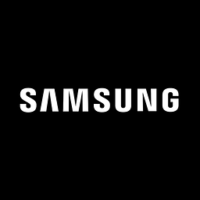

Sony
Wireless Earbuds
Last update today
Export
United States
History
Rerun
OverviewOverview
VisibilityVisibility
SentimentSentiment
Score Breakdown
Quick read of what lifts or limits visibility
QualityVery Strong82%
PerformanceModerate41%
Price & ValueModerate58%
InnovationStrong75%
Competitive Position
How your brand ranks against competitors across topics
#2
Apple#1Leader
Bose#3

Samsung#4Source Intelligence
Which websites AI models cite in their answers
31 sources · 2 battery mentions of Sony
rtings.comReview6 men.
soundguys.comReview5 men.
whathifi.comReview4 men.
reddit.comForum3 men.
Backlinks & Citations
Visibility Rank
#2
Visibility Score
—
 ChatGPT
ChatGPT Gemini
Gemini Claude
ClaudePrompt Explorer
How AI platforms respond to prompts about your industry
PromptsTrafficLLMs — click to view answer
Sentiment Breakdown
Quick read of what lifts or limits sentiment
QualityVery Strong
InnovationStrong
Price & ValueModerate
PerformanceWeak
Sentiment trend
Your overall sentiment across all AI models
Jun 2Oct 25
RANGEJun 2 – Oct 25· 6 of 6 runsReset
StrongStrong6
CurrentPreviousRuns total